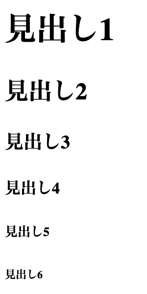

(1) 見出し
見出しタグ<h1>〜<h6>
見出しには<h1>〜<h6>タグを使います。hは見出しを意味するheadingの略です。h1，h2，h3，h4，h5，h6の６種類のタグがあり、h1が一番大きな見出しで、h2，h3と数字が大きくなるにしたがって見出しのサイズは小さくなります。見出しのレベルによって使い分けをしましょう。
<!-- sample1-3_1.html ＞ 実習コード① -->
<h1>見出し1</h1>
<h2>見出し2</h2>
<h3>見出し3</h3>
<h4>見出し4</h4>
<h5>見出し5</h5>
<h6>見出し6</h6>

大見出しである<h1>は１ページにつき１回が推奨されていいて、そのページのタイトルなどに用いられます。
<h2>を記事のまとまりとしての中見出し，<h3>を小見出しとして使用されることが多いです。さらに必要であれば<h4>をより小さい見出しとして用い、<h5>と<h6>はあまり使われることはありません。
(2) 段落と改行
段落タグ<p>
<p>タグは文章の段落を表します。pは段落を意味するparagraphの略です。<p>〜</p>に囲まれた部分が１つの段落となります。段落と段落の間は改行され、段落間には少しスペースができます。
<!-- sample1-3_1.html ＞ 実習コード② -->
<p>1段落目の文章</p>
<p>2段落目の文章</p>
<p>3段落目の文章</p>
改行タグ<br>
<br>タグは段落の中で改行するときに使います。brはbreakの略です。改行したい位置で<br>を記述し、終了タグは不要です。
<p>タグがひとまとまりの文章としての段落であるのに対して、<br>タグは閲覧性の見やすさから改行をしたいときや改行前後で段落を変えたくないときに用います。
<!-- sample1-3_1.html ＞ 実習コード③ -->
<p>1段落目の文章をここに書きます。<br>
次の段落にはいかないが、改行したいときに改行タグを使います。</p>
(3) 文字の強調
文章の中で特に重要な語句がある場合、<strong>タグや<em>タグを使って強調します。
<strong>タグ
<strong>タグは重要な語句・内容を示します。多くのブラウザでは、太字で表示されます。
<!-- sample1-3_1.html ＞ 実習コード④ -->
<p>重要な語句には<strong>strongタグ</strong>を使います。</p>
<em>タグ
<em>タグはemphasisの略で、アクセントをつけて強調します。<strong>ほど強く強調しない場合には<em>を使用します。多くのブラウザでは、斜体で表示されます。
<!-- sample1-3_1.html ＞ 実習コード⑤ -->
<p>strongほど強くはないが、強調したいときには<em>emタグ</em>を使います。</p>
(4) ページの構成
ページの構成
hタグやpタグを使って、１ページのアウトラインは次のような形にすることが推奨されています。
必要に応じてインデント（字下げ）をつけるとソースコードが見やすくなります。インデントは半角スペース２つ分で字下げします。
<!-- sample1-3_2.html ＞ 実習コード① -->
<h1>Webページ制作の基礎</h1>
<h2>HTMLの基本構造</h2>
<h3>HTMLとは何か</h3>
<p>HTMLはウェブページを作成するための言語です。<br>
主にテキストや画像を表示するために使われます。</p>
<p>ウェブブラウザはHTMLを解釈し、ページの見た目を表示します。</p>
<h3>基本的なタグ</h3>
<p>HTMLには、見出しや段落などを定義するための<strong>タグ</strong>があります。<br>
見出しは<em>h1</em>から<em>h6</em>まであり、段落は<em>p</em>で表されます。</p>
<p>これらのタグを使うことで、ページの構造を作ることができます。</p>
<h3>HTMLファイルの構成</h3>
<p>通常、HTMLファイルは<strong>html</strong>というタグで囲まれます。<br>
その中に<strong>head</strong>タグと<strong>body</strong>タグが含まれます。</p>
<p><strong>head</strong>にはページのタイトルやスタイルなどが、<strong>body</strong>には実際のコンテンツが入ります。</p>
<h2>CSSの基礎</h2>
<h3>CSSとは</h3>
<p>CSSはウェブページのデザインを設定するための言語です。<br>
色やフォント、レイアウトなどを指定することができます。</p>
<p>CSSを使うと、ウェブページの見た目を簡単に変えることができます。</p>
<h3>セレクタとプロパティ</h3>
<p>CSSでは、要素を選んで、そのデザインを指定します。<br>
たとえば、<strong>p</strong>というタグを選んで、文字の色や大きさを設定することができます。</p>
<p>プロパティとしては、色やフォントサイズなどがあります。</p>
<h3>外部スタイルシートの使用</h3>
<p>外部のCSSファイルを使うと、複数のページに同じデザインを適用することができます。</p>
<p>これにより、デザインの管理が簡単になります。</p>